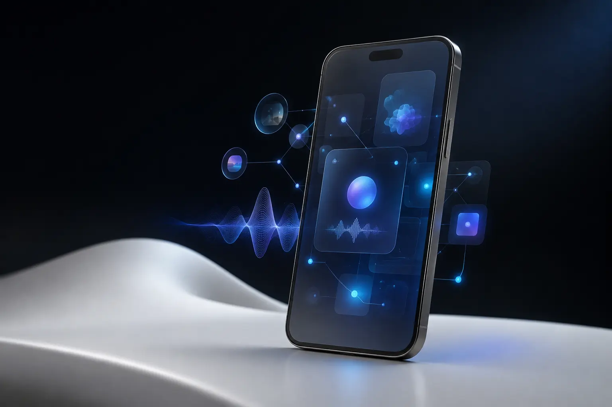

Long-term memory
Useful context organised over time, with the person in control.
An assistant that keeps the thread.
Ivi is a personal intelligence designed to remember context, speak naturally and connect the tools that shape everyday life.

The idea
Context, not commands
Most assistants begin every conversation from zero. Ivi is built around continuity: decisions, preferences and useful context remain available when they are needed again.
The experience brings memory, voice and connected actions into one calm personal space. Local intelligence keeps everyday interactions fast while cloud capabilities remain available for deeper work.
Useful context organised over time, with the person in control.
A conversation that feels immediate, fluid and present.
Private, responsive assistance for the things that should stay close.
One assistant able to move from understanding to useful action.
The experience
Everything is in place.
Your latest project decisions are ready.
12 relevant memories connected.
Ivi is being developed as a native personal space with a privacy-first foundation. Each layer is designed to work independently and become more capable as the system grows.